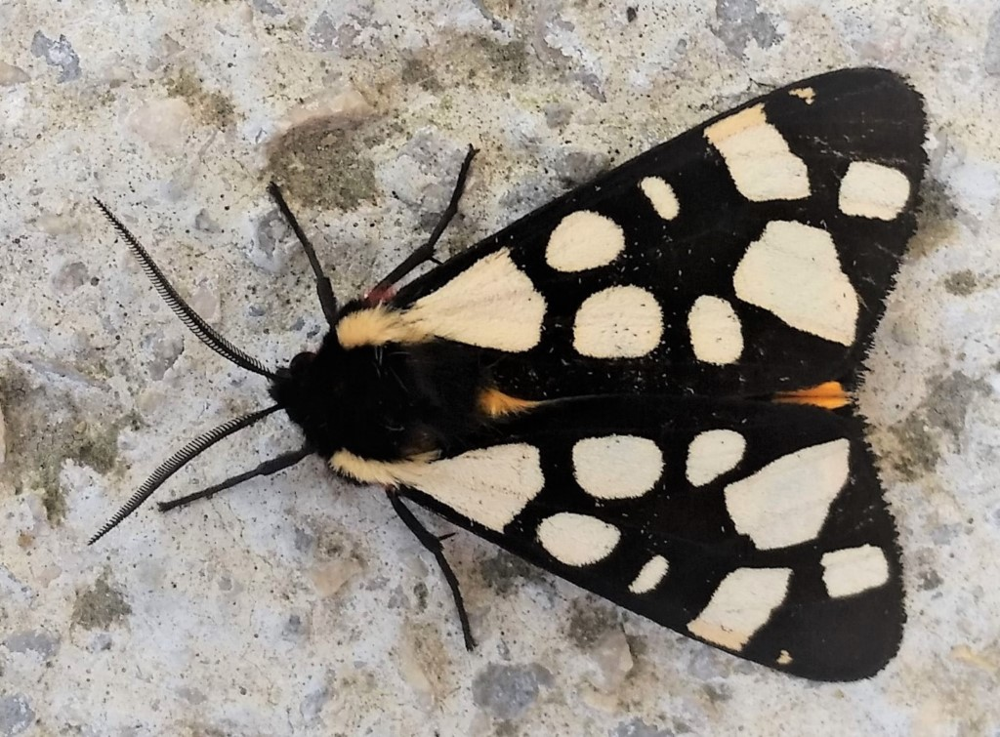

POLILLA TIGRE COMÚN
Arctia caja

Como defensa, emite ráfagas de clics ultrasónicos que pueden despistar a sus depredadores y advertirles que es altamente tóxica o venenosa.
- Nombre científico: Arctia caja
- Mimetismo: Ráfagas de clics ultrasónicos para despistar y advertir de su toxicidad.
- Hábitat: Regiones tropicales, subtropicales y templadas de todo el mundo.
- Sentido: Sonido.
- Función: Supervivencia; aturdir y despistar.